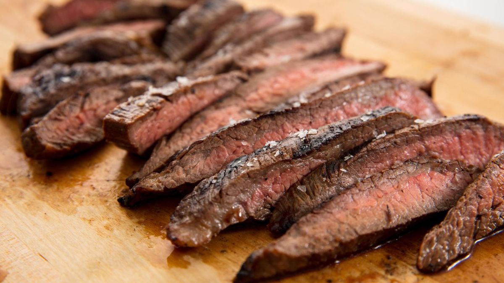

Steak Recipe

Description
Steak is an easy meal to cook and takes little time to finish.
It's also easy to practice and continually improve upon, since you can usually eat it whether it's over or undercooked.
Ingredients
- Uncooked steak
- Pepper
- Optional: Grated Cheese to melt
Steps
- Unpackage steak
- Heat fry pan for 2 minutes on high
- Reduce to medium and add steak to pan
- Cook for 10 minutes for medium. Turning once every five minutes
- Remove from pan, season with pepper and add cheese and let sit to melt